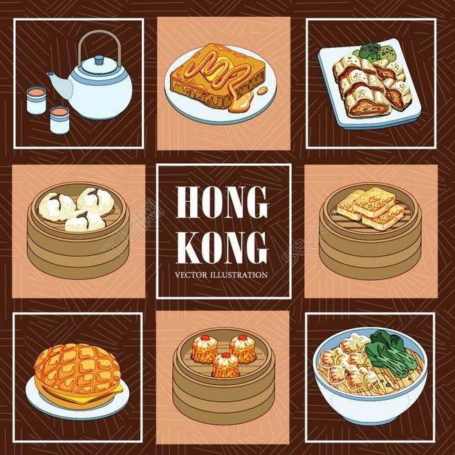
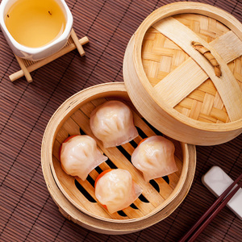
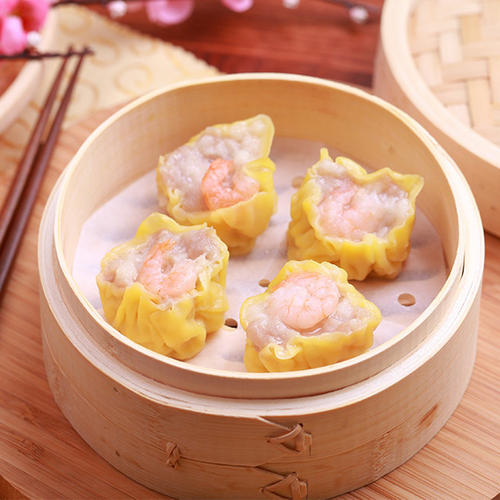
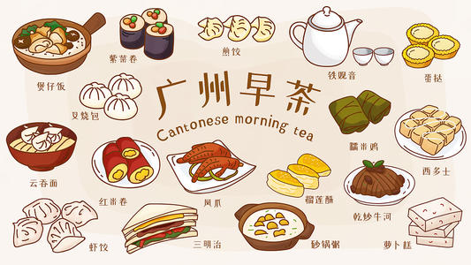

Cantonese high tea is a part of the Cantonese culture, mostly starts from 11am and ends at 2pm.
The classic Cantonese-style high tea is dim sum, people will order different types of dim sum and share with each other,one dish is in numbers of 4 or 6. The famous ones are the shrimp dumpling, chicken claw, Cantonese roast pork, spring roll, and different types of buns.
Besides dim sum, there are also some popular drinks in high tea, tea, hot milk tea, lemon tea and cooked soup.



Cantonese high tea is very popular in nowadays, however, there are somethings that you might not know:
1. High tea only serves in noon. (Mostly before 3pm)
2. Every single Classic Cantonese-style dim sum is made by hands.
3. There are more than a hundred types of dim sum.
4. High tea is a way of socializing in the local culture.
5. The earlist high tea starts from 5am in the morning.
6. The origin of high tea is from the Qing Dynasty.
The story of Cantonese high tea

The first high tea restaurant originated from the Qing Dynasty (about 100 years from now), the name of this type of restaurant is "YiLi Guan", and serves few types of dim sum with tea.
Later, this type of restaurant improved into independent storied buildings, and dim sum became the most important character in these restaurants.
Morning tea, another name of the Cantonese high tea, is believed to be one of the best ways to start your day. People that live in the Cantonese culture also use it as a way of socializing, no matter with friends, colleagues or family members, people share dim sum and create an atmosphere that can only be found in this particular type of culture.
Picture sources: https://image.baidu.com/search/index(Cantonese High Tea)